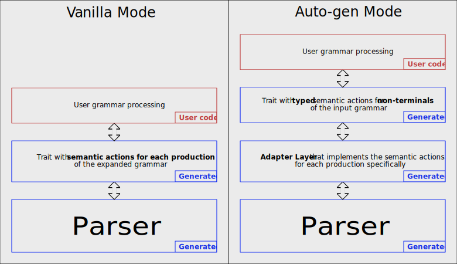

Semantic actions
The parol parser generator creates traits with functions that represent semantic actions.
The generated parser then calls these functions at parse time at the appropriate points with correct
arguments.
The generated trait for user actions (i.e. semantic actions) will be named after the following scheme:
#![allow(unused)] fn main() { pub trait <NameOfYourGrammar>GrammarTrait<'t> { // ... } }
The lifetime parameter <'t> can be left out if the types used don't hold references to the scanned text. This is automatically deduced.
Eventually your grammar processing item implements this trait and can overwrite those functions of the trait in which it is interested in.
It doesn't need to implement all trait functions because the trait is created in a way where all of its functions have default implementations.
parol provides two different modes with different properties of semantic actions:
Overview of the two modes
Semantic actions in Vanilla mode
In the less comfortable vanilla mode there are some differences we will address next.
The functions in the semantic actions trait correspond to the productions of the expanded grammar. This implies that you as the user have to look more closely at this transformed version of your original grammar and that you should have a basic understanding of the transformations that had been applied to it.
The functions' parameter then correspond to the right-hand side of the respective production.
To demonstrate this aspect we show an excerpt of the generated semantic actions seen in the example from the previous chapter.
#![allow(unused)] fn main() { pub trait VanillaListGrammarTrait { // ... /// Semantic action for production 5: /// /// Num: "0|[1-9][0-9]*"; /// fn num(&mut self, _num: &ParseTreeType) -> Result<()> { Ok(()) } // ... } }
This is only the semantic action for production 5:
/* 5 */ Num: "0|[1-9][0-9]*";
The first thing you will notice is that the trait function has a default implementation. It does
nothing but returning Ok.
The second property of a all these functions is that the first argument always is a mutable
reference to the implementing item, in this case a reference to VanillaListGrammar.
The rest of the arguments correspond to the right-hand side of the respective production.
Next you see a concrete implementation of a semantic action, where all arguments of the semantic action are used. This is not always necessary the case and depends on your own language implementation.
#![allow(unused)] fn main() { impl VanillaListGrammarTrait for VanillaListGrammar { /// Semantic action for production 5: /// /// Num: "0|[1-9][0-9]*"; /// fn num(&mut self, num: &ParseTreeType) -> Result<()> { let symbol = num.text()?; let number = symbol .parse::<DefinitionRange>() .map_err(|e| parol!("num: Parse error: {e}"))?; self.push(number); Ok(()) } } }
You can see that the parameter of the semantic actions which correspond to the right-hand side of
the respective productions are all of type &ParseTreeType. This type from the
parol_runtime
crate is defined this way:
#![allow(unused)] fn main() { /// /// The type of the elements in the parse tree. /// /// The lifetime parameter `'t` refers to the lifetime of the scanned text. /// #[derive(Debug, Clone)] pub enum ParseTreeType<'t> { /// /// A scanned token. /// T(Token<'t>), /// /// A non-terminal name. /// All names are of static lifetime (see NON_TERMINALS slice of non-terminal names). /// N(&'static str), } }
It implements two functions that you can directly call in your semantic actions:
#![allow(unused)] fn main() { impl<'t> ParseTreeType<'t> { /// /// Tries to access the Token of the ParseTreeType. /// Can fail if the entry is no terminal (i.e. a non-terminal). /// pub fn token(&self) -> Result<&Token<'t>, ParserError> { match self { Self::T(t) => Ok(t), _ => Err(ParserError::InternalError(format!("{} is no token!", self))), } } /// /// Tries to access the scanned text of the ParseTreeType. /// Can fail if the entry is no terminal (i.e. a non-terminal). /// pub fn text(&self) -> Result<&str, ParserError> { match self { Self::T(t) => Ok(t.text()), _ => Err(ParserError::InternalError(format!("{} is no token!", self))), } } } }
In your semantic action you exactly know which argument correspond to a terminal or a non-terminal symbol. If you want to access the token that contains a concrete terminal you can use one of these functions. Non-terminals are of lesser interest because non-terminals are simply nodes with the non-terminal's name that represents certain subtrees in the concrete parse-tree. So it is worth to consider the following hints.
A good way to process your grammar is to implement an own typed parse stack in your grammar processing item. Then you construct such stack items from the tokens you encounter in your semantic actions and push them on your parse stack. They then are something like the results of your semantic actions which are collected on the parse stack for further processing. You then can access these results of earlier semantic actions later from other semantic actions and construct the parse result step by step using them.
A good demonstration of this approach can be found at the example calc.
The direction in which the parser derives the symbols of your grammar guarantees that when a semantic action of a production is called all elements of the production have been processed before. That's why you know the non-terminals are collected and lay on top of your own parse stack.
Semantic actions in Auto-generation mode
The auto-gen mode abstracts away the expanded version of
your grammar. As in vanilla mode the
parol parser generator creates a trait with functions that represent semantic actions. But here
the semantic actions are typed and they are generated for the non-terminals of your input grammar
instead of for productions of the expanded grammar.
You therefore don't have to mess around with ParseTreeType although you still encounter items of
type Token. Also the expanded version of your grammar is much less of interest for you.
parol's great merit is that it can generate an adapter layer automatically that provides the
conversion to typed grammar items. Indeed I carved out some simple rules that can be applied
universally to provide this layer of abstraction by generating the production bound semantic
actions accordingly.
This and the automatic AST type inference are the most outstanding properties of parol.
We will use the example calc_auto for detailed explanations.
The file calc_grammar_trait.rs contains the generated traits and types we are interested in.
First we will have a look at the CalcGrammarTrait at the top of this file. For each non-terminal
of the input grammar
calc.par it contains
exactly one semantic action.
#![allow(unused)] fn main() { /// Semantic actions trait generated for the user grammar /// All functions have default implementations. pub trait CalcGrammarTrait<'t> { /// Semantic action for non-terminal 'calc' fn calc(&mut self, _arg: &Calc<'t>) -> Result<()> { Ok(()) } // ... } }
The approach taken in this example is quite interesting. We only implement the semantic action for the start symbol of our grammar: calc.
The implementation can be found in calc_grammar.rs.
Near the end you can find the one and only semantic action we implement here and thereby creating the functionality of a calculator language.
#![allow(unused)] fn main() { impl<'t> CalcGrammarTrait<'t> for CalcGrammar<'t> { /// Semantic action for non-terminal 'Calc' fn calc(&mut self, arg: &Calc<'t>) -> Result<()> { self.process_calc(arg)?; Ok(()) } } }
But what is the advantage of implementing only the start symbols's semantic action? Well, since the start symbol is the root node of each and every concrete parse tree we know, that the generated type for it should comprise the complete input as the result of the parsing.
The key to this is the structure of the generated type Calc. It resembles the structure of all
productions belonging to the non-terminal `calc'. There is actually only one production for calc:
calc: { instruction ";"^ };
#![allow(unused)] fn main() { /// /// Type derived for non-terminal calc /// pub struct Calc<'t> { pub calc_list: Vec<CalcList<'t>>, } }
The type Calc is basically a vector, which can be deduced from the repetition construct at the
right-hand side of the production ({ instruction ";"^ }).
The elements of the vector are of type CalcList that is defined this way:
The reason why boxed types are needed is explained here.
Also note that in the meantime the very
Boxhere could be optimized away byparol. This is a great example of the evolution of it.
#![allow(unused)] fn main() { /// /// Type derived for non-terminal calcList /// pub struct CalcList<'t> { pub instruction: Box<Instruction<'t>>, } }
And in turn the type Instruction looks like this:
#![allow(unused)] fn main() { /// /// Type derived for non-terminal instruction /// pub enum Instruction<'t> { Assignment(InstructionAssignment<'t>), LogicalOr(InstructionLogicalOr<'t>), } }
The latter one is an enum with two variants because the non-terminal instruction has two
productions:
// ---------------------------------------------------------
// INSTRUCTION
instruction: assignment;
instruction: logical_or;
This concept is applied for all non-terminals of your grammar. Actually your grammar became typified.
This means eventually that any variable of type Calc can represent a validly parsed input sentence
that belongs to the grammar defined by
calc.par.
You then only have to evaluate the content of this value as done in this calculator example. I recommend to study this example more deeply and the approach will become obvious to you.
As mentioned earlier the implementation can be found here: calc_grammar.rs.